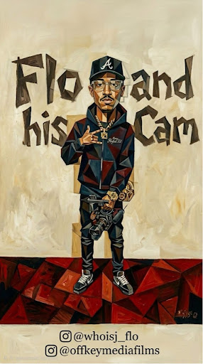

Cinematic Filmmaking
Short films, music videos, promos, and branded features shot with a clear visual style.
From the first idea to the final edit, OFF-KEY MEDIA can help shape the look, sound, and delivery of your project.
Short films, music videos, promos, and branded features shot with a clear visual style.
Live events and performances captured from multiple angles for stronger edits.
Planning for interviews, performances, speeches, and moments where sound matters.
Natural light, event lighting, or controlled setups to match the mood of the project.
Short vertical clips and promo cuts ready for Instagram, TikTok, YouTube, and reels.
Scale the setup for bigger productions when the concept needs more hands and more gear.

Discovery - creative brief and scope. Pre-production - location, schedule, and shot list. Production - capture the moment. Post - edit, color, sound, and deliver.